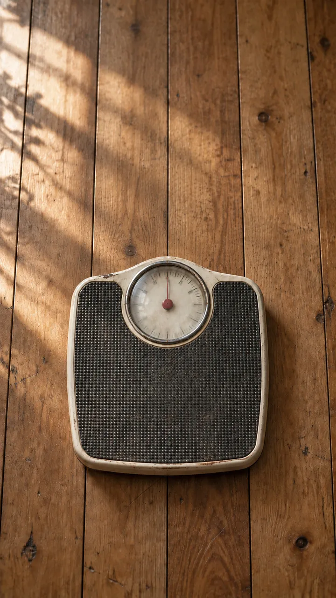
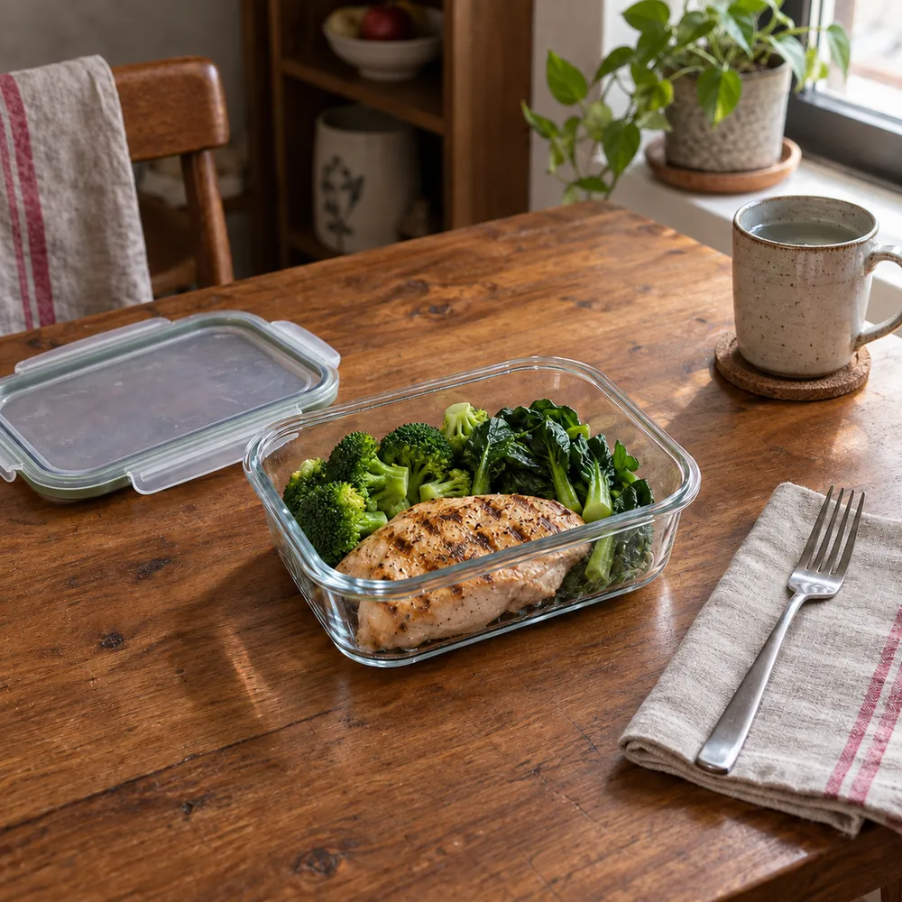
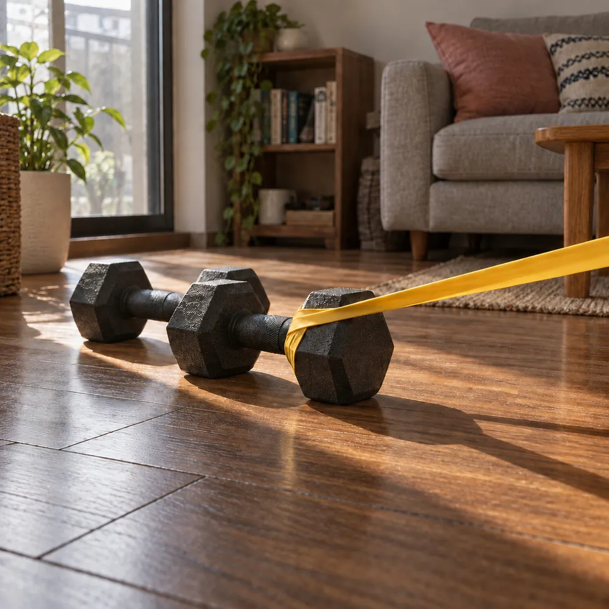
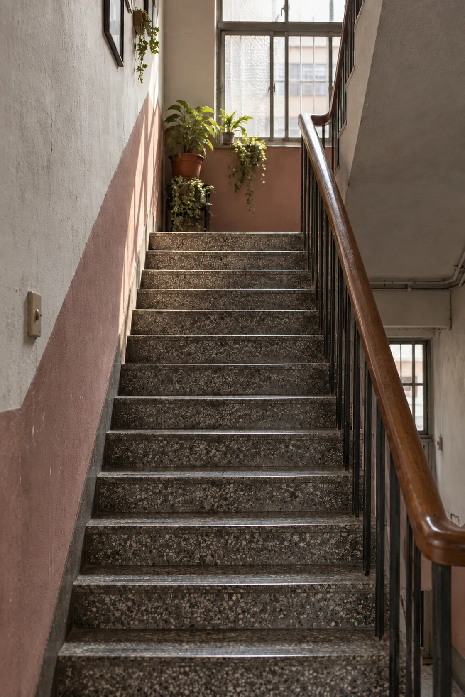
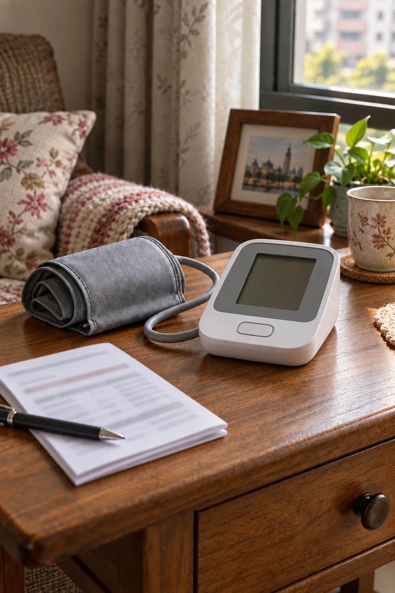
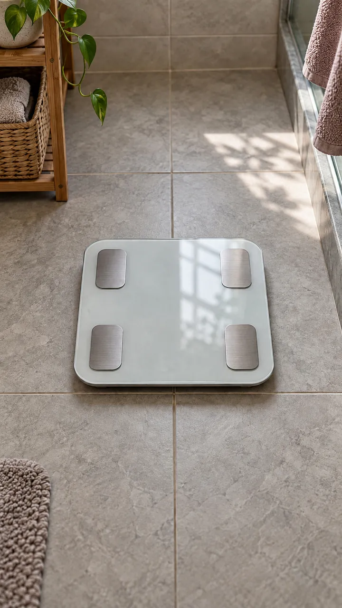

BMI
第一線篩檢工具
以身高和體重計算的初步體位指標。台灣成人標準：過輕 < 18.5；健康體重 18.5–23.9；過重 24–26.9；肥胖 ≥ 27（TMASO台灣成人肥胖臨床實證指引）
≥27kg/m²
BMI ≥ 27 為肥胖
這可能不只是體重的問題——
肥胖正悄悄提高你罹患慢性病的風險。
Step 1｜找出原因

明明控制飲食、規律運動，體重卻卡住不動
好不容易瘦下來，沒多久又慢慢復胖
比別人更容易餓，也更難有「吃飽了」的感覺

覺得好像有一股力量，在阻止你瘦下來
如果你也有以上幾項經驗——
這不是你不夠努力。
肥胖其實是一種慢性疾病，身體對減重存在天生的「生理抗阻」機制，會讓減重變得比想像中更難，而且很多人正經歷一樣的事。
Step 2｜看懂風險
01/ 06
爬樓梯容易喘、心跳加快
02/ 06
睡覺時容易打鼾，或感覺呼吸不順暢
03/ 06
睡醒後仍然感覺疲倦，白天精神不濟
04/ 06
關節（膝蓋、腰部）常感到疼痛或負擔
05/ 06
血壓或血脂數值曾被醫師提醒需要留意
06/ 06
家族中有糖尿病或心血管疾病病史


肥胖與以下疾病風險相關，及早留意，才能及早調整。
Step 3｜了解自己的狀況
把多項指標放在一起，
才能看懂身體的真實狀態。

第一線篩檢工具
以身高和體重計算的初步體位指標。台灣成人標準：過輕 < 18.5；健康體重 18.5–23.9；過重 24–26.9；肥胖 ≥ 27（TMASO台灣成人肥胖臨床實證指引）
≥27kg/m²
BMI ≥ 27 為肥胖
腹部肥胖指標
反映腹部脂肪堆積程度。
90/ 80 cm
男性 ≥ 90 公分、女性 ≥ 80 公分，即為腹部肥胖
反映內臟脂肪
評估體脂肪分布，內臟脂肪較高者代謝風險也較高。
>0.5
WHtR > 0.5，與較高的心血管代謝風險有關

直接反映脂肪總量
無論 BMI 是否達標，都應納入肥胖評估。
25/ 35 %
男性 > 25%、女性 > 35%，即可視為脂肪過多
單一指標難以完整反映脂肪分布與代謝風險，僅憑 BMI 診斷，可能低估部分高體脂率個案的代謝風險。臨床上應結合多項工具評估，以提高辨識度與準確性。
BMI 是第一線篩檢工具，花 1 分鐘計算你的 BMI，作為了解自己狀況的第一步。
立即檢測 BMIBMI 是根據您的體重與身高計算，較高的 BMI 可能是提醒您與醫師討論體重健康狀況的重要指標之一。BMI 計算機僅供參考，並非診斷工具。
02 / 03
肥胖症可能影響的不只是體重——與多種共病相關。以下情況是否符合您的狀況？（複選）
03 / 03
0.0kg/m²
—